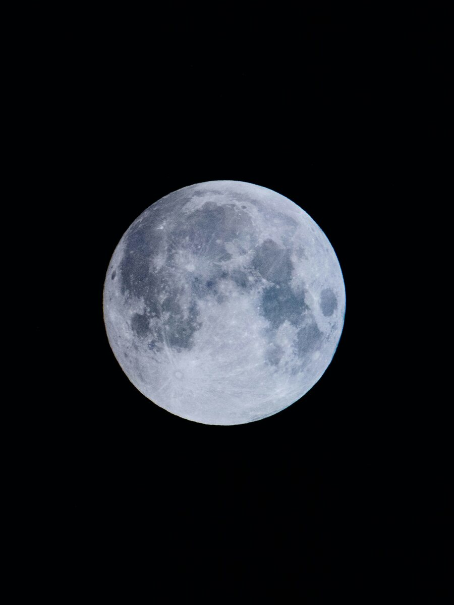

The big themes of your year
The handful of stories the period ahead is really about, so you can put your energy where it counts instead of everywhere at once.
Your year ahead, mapped to your own chart: when to act, when to wait, and the cycles shaping the months to come.
An astrology forecast reading (sometimes called a yearly or predictive reading) follows the current movement of the planets, your transits, against your birth chart. It highlights the themes, the openings and the pressure points of the period ahead, so you can plan launches, changes and big decisions with the timing rather than against it.
Book this reading How it works

Your birth chart is fixed, the sky as it stood the moment you were born. But the planets keep moving, and as they travel they form angles to the placements in your chart. Those moving contacts are called transits, and they are the engine of every forecast. An astrology forecast reading interprets them for you: not the sky in general, but the sky as it touches your chart, this year.
A forecast is not fortune-telling, and it will never tell you that something is simply fated. What it does is describe the weather ahead: the seasons that favour bold moves, the stretches that ask for patience, the months when love, work or money come to the foreground. Think of it as a map of timing, so the choices stay yours, made with the cycles instead of against them.
Most people book a forecast when something is on the horizon: a launch, a move, a wedding, a career change, or simply a new year they want to meet with intention. Others come in a hard stretch, wanting to understand what is happening and, just as importantly, when it eases. Either way, you leave knowing where you are in your own story, and what the road ahead is likely to ask of you.
One reading, read as a whole, because timing only makes sense against the backdrop of your own chart.
The handful of stories the period ahead is really about, so you can put your energy where it counts instead of everywhere at once.
The windows that favour bold moves, and the ones better spent preparing, so you stop pushing against a closed door.
The supportive cycles, the moments when effort meets momentum and a yes is more likely to land.
The tighter passages named in advance, with a clear sense of what they are asking and how to move through them well.
The stand-out moments in your period, the dates worth circling, whether to seize them or simply to be gentle with yourself.
Which areas of life light up and when, so you can lean into a strong season for romance, career or finances.
Nothing to prepare beyond your birth details and the period you want to look at. Here's the whole process.
Send your date, time and place of birth, the period you want mapped, and what's on your mind. It all stays private.
Your forecast is calculated against your natal chart and interpreted by hand, never auto-generated, ahead of your session.
We meet online, one to one. Olga walks you through the year, the themes and the dates that matter, and you can ask anything.
You leave with a clear sense of your year and guidance you can return to each time a decision comes up.
Not sure it's the right fit? Tell Olga your situation and she'll point you to the best starting point, honestly, even if that's a different reading.
Every forecast on this site is calculated and interpreted by Olga herself, not software, and not a template.
Olga is a professional astrologer who works one to one with each client. Her approach to timing is warm but grounded: clear, practical guidance about what the year is likely to ask of you and how to meet it, always confidential, and always read against your own chart. From your first message to your final session, you're working directly with her.
The things people most often want to know before booking a forecast.
An astrology forecast reading is a personal one-to-one session that maps the period ahead onto your own birth chart. By following the current movement of the planets (your transits) against your natal chart, it highlights the themes, opportunities and pressure points of the months to come, so you can time your decisions with the cycles rather than against them.
A horoscope is generic and written for a whole Sun sign. A natal chart reading describes who you are. A forecast reading is about timing: it takes your unique birth chart and looks at what the current and upcoming planetary cycles are activating in it, and when.
Most people choose the year ahead, often starting around their birthday (the solar return). You can also focus on a shorter window or a specific decision. Tell Olga the timeframe and the questions on your mind and she'll tailor the forecast to them.
No, and it shouldn't claim to. A forecast describes the weather, not your every choice: the themes, the timing and the likely pressures and openings. You keep your free will. The value is in planning consciously, knowing when conditions favour action and when patience serves you better.
It helps, but it isn't required. A forecast is always read against your birth chart, so if you're new to astrology Olga will set the context you need. Many people begin with a natal chart reading, then return for a forecast when a decision or a new year approaches.
Your date, time and place of birth, the period you want mapped, and a few words about what matters most right now. Olga prepares your forecast in advance and walks you through it in a personal online session, wherever you are. Everything you share stays confidential.
Understand the chart, then read it in motion, and zoom in where it matters most.
The foundation: who you are at the core. The chart every forecast is read against.
Learn moreTiming a career move? Pair your forecast with a focused look at vocation and direction.
Learn moreA relationship at a turning point? See how two charts meet, alongside your timing.
Learn moreThinking of a move in the year ahead? See where the map supports you best.
Learn moreShare your birth details and the period on your mind. Your forecast is personal, confidential and held online, wherever you are in the world.
Book this reading All consultations